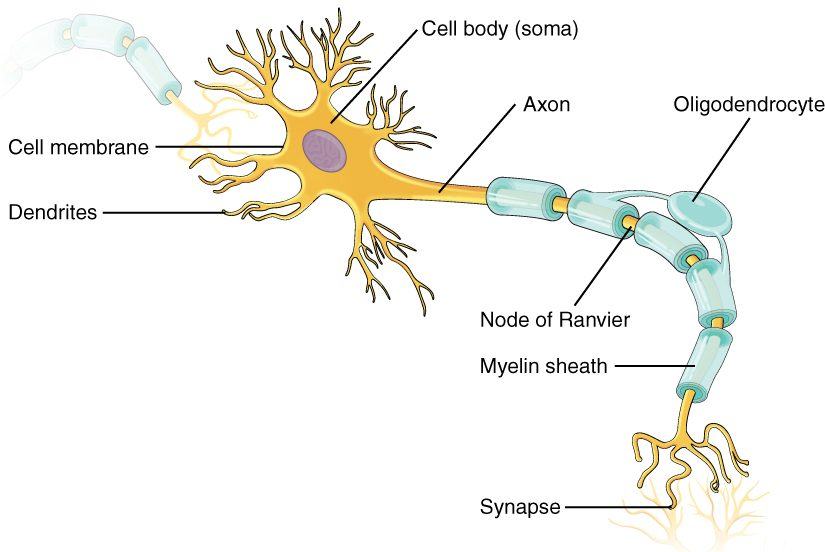

Nervous tissue
1Why this matters
Jamal, 24, slipped while carrying a glass tabletop and sliced the inside of his wrist. The bleeding stopped with pressure, but his thumb and first two fingers are numb, and he cannot bring his thumb across his palm. The glass cut a nerve. One cut through one cord silenced signals flowing both ways: feeling coming in from his fingers and commands going out to his thumb muscles. To see how one cut does both, you need to know what a nerve is made of.
2What this builds on
3Quick check before you start
1. Which primary tissue type carries electrical signals?
- Nervous tissue
- Epithelial tissue
- Muscle tissue
Show the answer
Nervous tissue carries electrical signals from place to place. Muscle tissue responds to signals by contracting, and epithelium covers and lines surfaces.
- Correct: Nervous tissue:
- Epithelial tissue:
- Muscle tissue:
2. How does a cell release the contents of a vesicle to the outside?
- Osmosis across the membrane
- Exocytosis: the vesicle fuses with the plasma membrane
- Diffusion through a gap junction
Show the answer
In exocytosis, a vesicle fuses with the plasma membrane and empties its contents outside the cell. Osmosis moves water, and gap junctions connect two cells' cytoplasm.
- Osmosis across the membrane:
- Correct: Exocytosis: the vesicle fuses with the plasma membrane:
- Diffusion through a gap junction:
3. Which organelles build proteins that a cell ships to other places?
- Lysosomes
- Mitochondria
- Rough ER and the Golgi apparatus
Show the answer
Ribosomes on the rough ER make these proteins, and the Golgi apparatus modifies, sorts and packages them into vesicles. Mitochondria make ATP, and lysosomes break things down.
- Lysosomes:
- Mitochondria:
- Correct: Rough ER and the Golgi apparatus:
4Anatomy

With labels hidden, select a box to reveal its label.
5How it works, step by step
- Axon terminals of other neurons release chemicals onto this neuron's dendrites and cell body.The dendrites and cell body receive many incoming signals at once.
- The incoming signals add together in the cell body.If they are strong enough, the neuron starts a signal of its own where the axon leaves the cell body.
- The signal starts in the axon.It travels the length of the axon, faster where glial cells wrap and insulate it, and reaches the axon terminals.
- The signal reaches the axon terminals.They release chemicals by exocytosis, and the next cell (a neuron, muscle fiber or secreting cell) responds.
6Core concepts
7A common mistake
The wrong idea: A nerve and a neuron are the same thing.
What actually happens: A neuron is one cell. A nerve is a cable made of the axons of many neurons, held together by connective tissue that carries blood vessels. The cell bodies of those neurons are not in the nerve; they sit in or near the brain and spinal cord. A single nerve can hold thousands of axons carrying signals in both directions.
8Check yourself
Anything you miss goes into your review queue.
1. Which part of a neuron is specialized to receive signals from other cells?
- The axon
- The axon terminals
- The dendrites
- The nucleus
Show the answer
Dendrites (dendr- = tree) are short, branched extensions of the cell body. Their branches receive signals from the axon terminals of other neurons.
- The axon: The axon carries the neuron's own signal away from the cell body.
- The axon terminals: Axon terminals send signals to the next cell by releasing chemicals.
- Correct: The dendrites: Correct. Dendrites receive incoming signals.
- The nucleus: The nucleus holds DNA and directs protein making; it does not receive signals from other cells.
2. Put the path of a signal through one neuron in order.
- Dendrites receive signals from other cells
- The cell body combines the incoming signals
- The axon carries a signal away from the cell body
- Axon terminals release chemicals onto the next cell
Show the answer
Signals come in through the dendrites, are combined in the cell body, leave along the axon, and are passed on by the axon terminals.
- Correct order: 1. Dendrites receive signals from other cells 2. The cell body combines the incoming signals 3. The axon carries a signal away from the cell body 4. Axon terminals release chemicals onto the next cell
3. After a deep cut at his wrist, Jamal's thumb and first two fingers are numb, and he also cannot move his thumb across his palm. Why did one cut cause both problems?
- The cut nerve held axons carrying signals in both directions
- The cut destroyed the neurons' cell bodies in his wrist
- Only the muscles were cut, and numbness follows muscle injury
- Glial cells in the wrist stopped making the signals
Show the answer
A nerve is a cable of many axons. Some carry feeling in from the skin; others carry commands out to muscles. Cutting the nerve cuts both kinds at once.
- Correct: The cut nerve held axons carrying signals in both directions: Correct. One nerve carries axons running both inward and outward.
- The cut destroyed the neurons' cell bodies in his wrist: The cell bodies of these neurons are not in the wrist; they lie in or near the spinal cord. The cut severed their axons.
- Only the muscles were cut, and numbness follows muscle injury: Muscle injury does not remove feeling from the skin. Numbness points to cut axons.
- Glial cells in the wrist stopped making the signals: Glial cells support neurons; the neurons themselves carry the signals.
4. A 45-year-old woman has a cancerous tumor that began in her brain tissue. From which cells did it most likely grow?
- Neurons
- Fibroblasts
- Nerves
- Glial cells
Show the answer
A tumor grows from cells that divide out of control. Mature neurons do not divide, but glial cells keep that ability, so most cancerous tumors that start in brain tissue arise from glia.
- Neurons: Mature neurons do not divide, so they are an unlikely source of a tumor.
- Fibroblasts: Fibroblasts belong to connective tissue. The question asks about a tumor that began in the brain tissue itself.
- Nerves: A nerve is a bundle of axons that runs outside the brain and spinal cord, not a dividing cell.
- Correct: Glial cells: Correct. Glial cells can divide, so they are the usual source.
5. Fill in the missing step. An axon is cut in the forearm → ______ → the part of the axon beyond the cut breaks down within days.
- That part loses its supply of proteins from the cell body
- That part takes in a new nucleus from the glial cells nearby
- Blood floods into the axon and dissolves it
- The cell body releases chemicals that dissolve it
Show the answer
The cell body makes nearly all of a neuron's proteins, and they are carried along the axon to where they are needed. A piece of axon cut off from its cell body loses that supply and breaks down.
- Correct: That part loses its supply of proteins from the cell body: Correct. Cut off from the cell body, the far piece loses its protein supply.
- That part takes in a new nucleus from the glial cells nearby: Glial cells do not donate nuclei to axons. Without its own nucleus, the far piece cannot make new proteins.
- Blood floods into the axon and dissolves it: Blood does not enter axons. The far piece breaks down because it has no protein supply.
- The cell body releases chemicals that dissolve it: The cell body is the supply, not the cause. The far piece breaks down because it is cut off from it.
6. A disease destroys the glial wrapping around the axons in one region, but leaves the axons themselves intact at first. Predict the effect on each variable for those axons.
| Variable | Change |
|---|---|
| Insulation around the axons | — |
| Speed of signals along the axons | — |
| Number of axons in the region (at first) | — |
| Time for a signal to reach the axon terminals | — |
Show the answer
Glial wrapping insulates axons and speeds signals. Remove it and the signal slows, so it takes longer to reach the axon terminals, even before any axons are lost.
- Insulation around the axons: down. The wrapping is layers of glial membrane that insulate the axon; destroying it removes the insulation.
- Speed of signals along the axons: down. Insulating wrapping makes signals travel much faster, so losing it slows them.
- Number of axons in the region (at first): no change. The question says the axons are left intact at first, so their number has not changed yet.
- Time for a signal to reach the axon terminals: up. A slower signal takes longer to cover the same length of axon.
9Summary
Nervous tissue is built from neurons, which carry signals, and glial cells, which support, insulate, feed and protect them. A neuron's cell body holds the nucleus and makes its proteins; dendrites receive signals; the single axon carries the signal away to axon terminals, which release chemicals onto the next cell. Mature neurons do not divide and depend on a constant supply of oxygen and glucose, while glial cells can divide. A nerve is a bundle of many axons wrapped in connective tissue with blood vessels, found outside the brain and spinal cord, and it usually carries signals both ways.